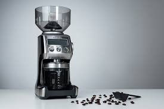
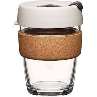

Coffee and books presentsThe articles
10 best coffee tools

Best Nonelectric Coffee Grinder: Hario Ceramic Coffee Mill - Skerton Plus

This luxurious coffee grinder can grind 60 beans in an astounding 38 seconds, which is enough to make 2 cups of coffee and that's just if you only fill it partially! Try doing that quietly with an electric grinder while the kids are asleep!
Hand grinders are a fantastic option for small kitchens, quiet mornings (those electric models can be so loud!), and individual brews but if you're making coffee for a crowd you probably don't want to have to do the cranking. The Hario Skerton Plus has ceramic burrs that can be adjusted to suit various grind sizes, from coarse to practically pulverized. It might take some trial-and-error to find your perfect grind, but it's worth the effort. Weigh your coffee beans before you load them into the tiny hopper for a precise amount of coffee grounds. The Hario Skerton Plus can hold up to 100 grams, which is on the larger side for a non-electric grinder and enough to make several cups of coffee at a time.
the Skerton Plus is a very versatile grinder with a full range of grind sizes. From espresso to french press, the Skerton Plus can be used for almost any brew method. The Skerton Plus's bottom glass bowl is capable of holding up to 100 grams of grounds, accommodating even the largest of brews. Because the Skerton is constructed of plastic, stainless steel and ceramic it is dishwasher safe, making internal cleaning a breeze. Its large set of conical ceramic burrs grind beans quickly and maintain their edges longer than steel burrs. The Skerton Plus features a burr stabilizing plate which helps keep the center shaft in place, decreasing burr wobble and helping the Skerton Plus achieve a more uniform grind.
Hario has been manufacturing glassware of the highest quality for general consumers and for industrial uses.
This hand grinder has been designed by Hario to provide coffee lovers with an inexpensive means to have freshly-ground coffee, even while traveling with a light load.
Coffee and books loves this coffee grinder because it is easy to assemble, the material was high quality, the product was to easy to clean, Very durable, easy to use and fairly easy to move for the traveling coffee enthusiast.
The Best Electric Coffee Grinder: Breville , the smart pro coffee grinder

One of the most significant ways to improve your at-home coffee is by freshly grinding the beans right before you brew. This optimizes the aroma, consistency, and, of course, taste of your coffee. Our favorite electric coffee grinder is the Smart Grinder Pro from Breville - a machine that drifts toward the pricier side but offers unparalleled quality and customization.
Customers say the item's stainless steel conical burrs offer a consistent (and consistently delicious) grind size.
Perhaps most important in a grinder, you can tailor the grind size to your unique coffee-making needs. The Smart Grinder Pro has a whopping 60 grind settings, perfect for everything from a fine espresso grind to a coarser French press grind.
Its 16-ounce bean hopper is larger than that of many other coffee bean grinders, and users add that it's easy to clean. You can grind directly into a portafilter, if you have an espresso machine at home, as well as into both paper and permanent filters. An LCD display makes these many features straightforward and easy to use, elevating your coffee with every batch of beans.The bean hopper was easy to remove, with the twist of a large dial. If the hopper is unlocked, the display lets you know with a polite message: 'Please lock hopper.'
When you place the grounds cup under the grinding chute, a magnet at the back grabs the container and holds it firmly in place, positioning the hole for minimal mess as the grounds are dispensed. Then, all we needed to do was select our grind size and amount and wait for fresh grounds. Removing the grounds cup requires a firm pull to drag it away from the magnet.
This machine looks high-tech, with a screen that displays everything you need. To change the grind size, we simply used the knob on the right side of the machine no need to twist the bean hopper.Like other Breville appliances, the Smart Grinder Pro's plug features a finger hole that makes it easy to unplug the grinder without yanking on the cord and damaging the grinder.
There are buttons on the front to control the number of cups or shots, adjust the grinding time, and start, pause, or stop the machine. The bean hopper is tinted which actually protects the beans from the light which helps ensure your coffee beans last longer, it also adds a really sleek accent to the design of the coffee grinder making it look much better than other grinders in the same price range. Breville also was kind enough to even add a removable tray beneath the cup that holds the coffee grounds to catch any spillage when grinding. Another great thing about this Electric Coffee Grinder is that it grinds at a consistent rate and grinds all your beans evenly. You get such a fine grind from this luxurious grinder that you will probably never buy another one.
Best Coffee Scoop: Stainless Steel Coffee Scoops from 1easylife
This 2 Tbsp coffee scoop is made of 1.8mm of Stainless Steel. This beast of a Coffee will never break, it will never bend and it will never rust. It is currently stouting an impressive 550 5 Star reviews on amazon! Over 90% of it's buyers say they love this Coffee Scooper and even recommend it to others. For a measly 6.99 you can show off this bad boy to your friends and always have a clean fresh coffee scooper every morning. If you don't pick up anything else online today buy this coffee Scooper. How often do you lose your coffee spoon? If you're like me you can't keep track of that dang thing or it breaks. With this scooper though, it is easy to identify and it won't break, so you'll never have to worry about buying another one.
Hamilton Beach 2-Way Brewer
This beast of a coffee maker is the Hamilton 2 way coffee maker, It's stainless steel beautiful design is an absolute pleasure to look at in the morning. This amazingly stylish Coffee Brewer was especially designed for the late riser on the run. With it's fully programmable settings that allow you to start the coffee pot whenever you want and also automatically shut if off after your coffee is made this is a must have for anyone on the go.
Parents will love this thing as much as the busy ceo, the developer who works a ton or even just for the laid back person who just doesn't want to be rushed. Hamilton was not playing around when they made this delightfully machine.
Not only did they include a huge 12oz Coffee pot, they also included a super convenient single serve coffee cup dispenser, so that busy people such as yourself can simply fill your coffee pot at night and grab your cup of Joe in the morning and head out the door! This coffee pot even fits all cup and mug sizes!
You no longer have to worry about waking up early enough to make your coffee in the morning or where you will stop for your morning cup of Joe to get you to lunch! That's right guys and gals, The future is finally here and you can wake up to a premade cup of coffee and head out the door the way you know you deserve too! With over 6800 Five Star reviews this thing is a must have for all coffee drinkers!
For all the coffee drinkers and aficionados who despise the long cafe lines, dread the overwhelming coffee options or need a fix for those early morning caffeine pains fear no more! There's finally an affordable, low maintenance coffee maker that can brew a basic or premium roast coffee in a fraction of the time and cost as the coffeehouse: The Hamilton Beach 2 Way Brewer.
With stainless steel durability and twice the brewing options as other leading coffeemakers, the 2 Way Brewer doubles as a compact single serve coffee maker for everyday personal enjoyment and a full 12 cup pot machine. Whether it's 7:00 a.m. or a late night indulgence, this two for the price of one coffee maker lets coffee drinkers decide the right size to start their day and enjoy the best convenience for their schedule.
Best Coffee Filter Storage: Reusable Stainless Steel Coffee Filter

This Reusable cone coffee filter is the most durable cone filter on the market. With its stainless steel design and easy to wash shape, you will never waste another penny or those flimsy coffee filters that always seem to get lost, dirty or just get away from you. This filter will last years. It has tons of cool features like it's wear resistant coating, it does not bend, it's super easy to use and fits a ton of different hamilton beach products and even other non hamilton beach coffee makers. With this reusable coffee filter you can finally go green and not have to worry about polluting the environment with tons and tons of coffee filters every year. According to mrrooter.com ''the average american consumes more than 700 pounds of paper each year and paper accounts for 25 percent of waste in landfills and 33 percent of municipal waste''
Best Travel mug: KeepCup Travel Mug

If you think that you would like an unsightly , ho-hum stainless-steel travel mug to bring coffee with you on the attend work or play, think again: KeepCup's beautiful and surprisingly durable tempered-glass body is thick enough to face up to bumps and drops (trust me, I've definitely tested this firsthand), and keeps coffee nice and hot on any commute. The BPA-free lids are available a huge sort of colors, so you'll customize your Joe to travel , and therefore the spill-proof slide on the highest prevents day-ruining spills down the front of your shirt while you're jostling to urge on the bus. The 12-ounce size is ideal for toting a latte out of the cafe, but KeepCup makes 8 and 16-ounce versions also . This cup is microwave safe, with fully tempered soda-lime glass and fully recyclable.
Best Coffee Scale: American weight scale sc series

This little pocket scale is my personal secret weapon when it comes to making great coffee anywhere. Its large capacity (meaning you can brew a full Chemex on it) and precise readings up to a tenth of a gram allow you to fine-tune your batch within a very tight range, even on bigger batches. Use it to weigh your coffee beans for a precise brew, after all brewing by weight ensures the ideal ratio for extraction. As with most scales, however, the one downside is that liquid can damage the display, but if you can make coffee without spilling it all over (a tough feat for me!), this inexpensive scale will last you countless coffees.
Best coffee pot cleaner: Brew Rite Coffee Maker Cleaner
This powerful little powder packs a huge punch when it comes to getting coffee oils and hard-water stains out of your coffee brewing equipment. The vast majority of users give Brew Rite Coffee Maker Cleaner five stars, saying it's easy to use, offers a lot of powder for its low price, and that it lives up to its claim of cleaning without that harsh vinegar smell. This product also works for espresso machines and non-electric coffee makers, like French presses. Simply pour cold water into your coffee maker, add one tablespoon of Brew Rite Cleaner for every 4 cups of water, stir until the powder is completely dissolved, and rinse the device. Cleaning your coffee maker with this genius device takes no more than 10 minutes but does wonders because a clean Coffee Maker is a reliable coffee maker, one that will last longer and consistently whip up the tasty brews that you love and deserve.
Coffee Grind Dispenser: Coffee Grinder Dispenser

With this must have coffee ground dispenser you can hold any flavor of coffee grinds. You will never have to worry about having extra coffee grinds, or spilling your coffee grinds all over your floor, cabinets, or countertops. With this coffee ground dispenser, you can store the best coffee grounds in the best dispenser.
Best Water Filter: Brita Stream Rapids 10-Cup Filter as You Pour Water Pitcher
you're serious about coffee and tea, the water is a crucial ingredient since water can add unwanted flavors from chlorine and impurities. This pitcher allows you to filter water quickly while it pours. The pouring is controlled, so, you'll fill your French press or other kitchen appliances with no spills. For cold brew, you'll even filter drinking water, so you've got cold water and ice as well.. The pitcher has an electronic filter change indicator, so you recognize when the filter must be changed, and it filters up to 40 gallons of water between filter changes. The pitcher holds 10 cups, which is plenty for coffee, while keeping the pitcher compact. If you need more water, just refill the pitcher and pour – there's no reason to wait. The pitcher is formed from BPA-free plastic, and thus the filters don't have to be soaked before using. This pitcher even comes with one filter to get you started.